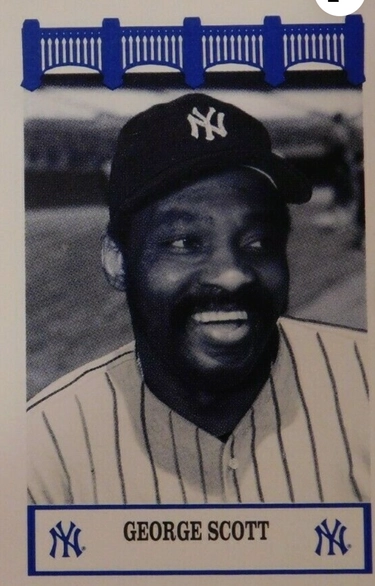

George Scott "The Boomer"
Career Highlights & Facts
(Facts are AI-generated and may require verification)
- Earned 8 Gold Glove Awards for defensive excellence at first base.
- Led the league in both total bases and runs batted in during a single season.
- Once hit a home run that was estimated by a teammate to have traveled 550 feet.
Would you like to find out more about George Scott?
Read Player Biography
George Scott
January 4, 2012
/
in
BioProject - Person
Home Run Champions
1960s All-Stars
,
1970s All-Stars
1967 Boston Red Sox
/
by
admin
This article was written by
Ron Anderson
George Scott’s professional baseball career spanned 41 years beginning in Class-D ball at Olean of the New York-Penn League in 1962. His travels were highlighted by his 14 seasons in the majors, starting with the Boston Red Sox in 1966. Scott also played for Milwaukee 1972-1976, Boston 1977-1978, and split his final year between Boston, Kansas City, and the New York Yankees. He served in various professional baseball capacities after his major-league career, notably in the Mexican and Independent Leagues, finishing as manager of the Berkshire Black Bears (Northern League) in 2002.
George Charles Scott Jr., was born March 23, 1944 in Greenville, Mississippi, the youngest of three children: a brother, Otis, and sister, Beatrice, both deceased.. Interviewed at his Greenville home, George stated that his first love was basketball, followed by football, and then baseball. His father worked as a laborer on a cotton farm and died when George was one. His mother, Magnolia, was forced to work three jobs to keep the family together.
Because of work commitments, she never saw her son play baseball until he reached the major leagues. When George was a young boy, he worked in the fields picking cotton. “That’s all we knew,” he relates. “The reason you did that, all of that money was turned over to your parents to make ends meet. Nothing can be worse than getting up at four in the morning waiting for a truck to pick you up to go pick and chop cotton from six or seven in the morning until five or six in the afternoon.”
1
Scott played Little League baseball, but was actually thrown off the team temporarily because he was “too good.” He was so large and so much better than the others that local authorities investigated his background to determine if he was older than 12. In one stretch of six games, he hit either two or three home runs in each game. As a major leaguer, he was listed at 6-feet-1 ½ inches and 205 pounds, though he often had trouble staying at that weight.
George attended Coleman High School in Greenville, Mississippi where he was a three-sport high school star, lettering in baseball, basketball, and football. He quarterbacked the football team, and led both his football and basketball teams to state championships, but chose baseball “to make my living. I got tired of watching my mom struggle. I didn’t have the mind that I could go to college and see my mother struggle for another four or five years.”
Scott was discovered by major-league scout Ed Scott (no relation) of Mobile, Alabama. Ed Scott, along with Boston Red Sox scout Milt Bolling, signed George as an amateur free agent for $8,000 bonus money right out of high school on May 28, 1962. Ed, who had signed
Hank Aaron
to his first major-league contract, described George as a better hitter when he graduated from high school than Aaron at the same age and stage of development.
George was assigned to Class-D Olean of the New York-Penn League for 1962. In 63 games, he batted .238 with five home runs and 28 RBIs. Olean swept second-place Erie in two games in the 1962 NYP League Governors’ Cup playoffs, but lost to Auburn in two straight in the finals.
In 1963, Olean’s franchise and its players moved to Wellsville (Class A) which re-entered the NYP League. Scott stayed with the club, and batted a solid .293 that year with 15 home runs, 74 RBIs, and 200 total bases to his credit. Wellsville finished second to the Auburn Mets, establishing a new league home run mark of 153 round-trippers as a team.
Scott mostly played shortstop, but in 1964 moved to third base at Winston-Salem (Single-A Carolina League). He did not start the season there, however, due to a knee injury and surgery in the off-season. Scott batted .288 while playing in only 55 games. He hit 10 home runs and drove in 30 runs.
Despite the shortened season, in 1965 George Scott was promoted by the Red Sox to the newly-established Pittsfield Red Sox of the Double-A Eastern League. 1965 was a banner year for both George and Pittsfield. Scott iced a 3-1 Pittsfield victory over Springfield on the season’s final day with an eighth-inning homer that gave Pittsfield the championship. That homer also won him the home run title, and the Triple Crown. Pittsfield finished 85-55, one game ahead of second place Elmira. Scott finished with a .319 average, 25 homers, and 94 RBIs. He also led the league in total bases (290), hits (167), doubles (30), at-bats (523), and tied for the league lead in games played (140). He was named the Most Valuable Player and received a unanimous vote from the National Association of Baseball Writers that named him to the Double-A All-East All-Star team.
The Red Sox picked up Scott’s contract from Pittsfield at the end of the 1965 season. Would Scott win a roster spot with the ’66 Red Sox? “Only a sensational spring training could land Scott a job with the big club sooner than ’67,” wrote scribe Larry Claflin of the
Boston Herald Traveler
.
2
Scott was a third baseman, and the club had another third-base prospect who was one level ahead.
Reporting on Boston’s other rookie third-sacker prospect,
Joe Foy
, as Red Sox spring training opened in Winter Haven in February, 1966, Claflin wrote, “Third base is his if he can hold it.”
3
The Red Sox brass, including Manager
Billy Herman
, all believed that Foy would replace departed veteran
Frank Malzone
. But Scott was determined to win a place on the team. “They gave him [Joe Foy] the job, and right[fully] they should. Joe Foy was the MVP in Triple A in 1965, and I was the MVP in Double A in 1965. Joe Foy was ahead of me, and they really should have given him the job. I had no quarrel with that. But I wasn’t going to settle for that. I was going to try to be on that roster come opening day. You know, it wasn’t actually that I was trying to take Joe Foy’s job. I was trying to win a roster spot for opening day,” Scott said.
Scott not only made the roster but opened the season at third base. Full of confidence coming off a tremendous spring season, he played well in his first two games in Boston (including a pinch-hit single off
Jim Palmer
in the second contest), although the Red Sox lost both to Baltimore. But his first game in Cleveland turned into a rookie’s nightmare. Scott encountered ace hurler
Sam McDowell
and went 0-for-5 with a walk, whiffing every at-bat (including three times against McDowell). He also made an error in the game. He singled once the next day and then collected two more base hits on the 17th.
“From that day on, Cleveland became one of my better clubs to hit against. I remember
Leon Wagner
making fun of me. Leon Wagner was in the outfield. Every time I would strike out, he would hold a finger up, and he told me he was glad I made contact because he was beginning to run out of fingers,” Scott lamented. On April 19, 1966–Patriots’ Day in Boston–Scott hit his first major-league home run, off
Joe Sparma
of the Detroit Tigers.
A week into the season, Scott was switched to first base, replacing
Tony Horton
. Scottie would make his mark as one of the finest first baseman to play the game, winning eight Gold Gloves. Herman used newly acquired
Eddie Kasko
at third for a short while, but then replaced him with Foy who played across the diamond from Scott for the balance of the year. On April 26 in New York, Scott hit a shot against the venerable
Whitey Ford
that may be remembered as one of the longest home runs in the history of the
Stadium
. Whitey later recalled that it was the longest home run he ever surrendered, and only
Frank Howard
and
Walt Dropo
had hit ones that traveled as far. When Ford asked
Mickey Mantle
what he thought the distance would have been if it hadn’t first hit the seats, Mantle replied with a laugh, “Well, to pick a round number you could say 550 feet and not be exaggerating.”
4
By mid-May 1966, George Scott was among the batting leaders, hitting .330, behind
Tony Oliva
and Baltimore’s Robinson boys,
Frank Robinson
and
Brooks Robinson
. He was leading in home runs with 11, and was the talk around the league, many projecting him for Rookie of the Year. Future Hall of Famer
Rick Ferrell
, who watched Scott during the spring and first part of the regular season, expounded on his talents: “In all my years in baseball, I have never seen a player have a debut like Scott. He’s amazing.”
5
Scott was the majority choice of his peers to start at first base in the 37th All-Star game on July 12th at Busch Memorial Stadium. He beat out
Norm Cash
of the Tigers, 141 to 62. He proved a non-factor. He batted twice against future Hall of Famers
Sandy Koufax
and
Jim Bunning
, but popped out both times. The National League won the game by a 2-1 score in 10 innings. Pitchers were beginning to catch up with Scott and his strikeout count began to mount. “What happened is the pitchers and teams adjusted on me, and I didn’t adjust to them quick enough. After the [1966] All-Star break they started throwing me a lot of change-ups and curve balls, and I didn’t make the adjustment. I don’t even know whether I was capable of making the adjustment at that time. All the leagues I had come up through, they threw me a lot of fastballs and I could hit that fastball,” Scott explains.
Herman was irked over his team’s failure to perform well on a western road trip. With Scott swinging at bad balls and without a home run for a month, Herman announced on July 19 that he would bench Scott. Scott’s batting average had dropped to .263, and he had fallen off the leaderboards. The day’s game against California was rained out, though, and rescheduled as part of a twi-night double-header the next day. Scott appeared in both games, and every game thereafter. The benching incident turned out to be just a threat by Herman, but what followed seemed to stir the Hub city. A July 25
Boston Globe
feature article called it “the George Scott case.”
6
Scott was devastated, fans were confused, and Herman’s back was to the wall to justify benching his rookie sensation. It made the local sports headlines for days. Speculation was rampant whether Scott was being treated fairly. He claimed he wasn’t getting help from his manager or coaches, nor were his teammates showing much concern for him.
Scott was not about to languish in misery; he took action, watched film, made adjustments to his stance, and often talked to teammate
Lenny Green
who helped him the most. He began to emerge from his slump. On July 29, he hit his 19th homer, and the following day his 20th. Although he would continue to hit for power–an attribute much favored by the Red Sox–he did not hit for the high average that had accompanied his slugging during the first half. He finished the year with 27 home runs and 90 RBIs, but batted a mere .245. He also led the league in strikeouts with 152, setting a rookie record in the process.
On September 9, 1966, Billy Herman was fired by the Red Sox. They wasted little time in replacing him with
Dick Williams
, manager of the club’s Triple-A Toronto affiliate, hiring Williams on September 28. During the offseason, the major-league players, coaches, and managers honored George Scott with the most votes (532) in their selections for the eighth annual Topps All-Star rookie team, ranked the best of both leagues.
Tommy Agee
–who would later cop the AL Rookie of the Year Award–placed second with 517 votes. The Boston baseball writers elected George Scott and Joe Foy co-winners of the
Harry Agganis
Memorial Award as Red Sox rookies of the year.
Dick Williams, the sharp-tongued new Red Sox skipper, began posturing and making noises around Beantown right from the start. He announced he was stripping
Carl Yastrzemski
of his position of team captain. There would only be one “chief” and that would be Dick Williams. He suggested Scott did not have a foothold on first base; it would be up for grabs between George and Tony Horton in Winter Haven. Williams was very high on Horton, whom he had managed in Toronto, and wanted to give him every chance he could to win the first-base job. He knew that Scott could play other positions. During the offseason, Scott declared publicly that he was no longer going to be a “dumb hitter.” He was going to reduce his strikeouts and stop chasing bad pitches. Scott outplayed Tony Horton both at hitting and fielding–averaging .333 with four straight hits in the final exhibition game–and won the opening day start at first base.
The Red Sox were only six games into the 1967 season when Dick Williams took decisive action against three of his players, benching them for poor performance. He benched Scott first, on April 17, followed by Joe Foy and
José Tartabull
. Scott had struck out nine times in the first five games and was hitting only .182, once again chasing bad pitches. That angered the quick-tempered manager. He also accused Scott, Foy, and
José Santiago
of being overweight and ordered them to diet. Williams’ concern for playing weight led to several more incidents between Williams and his players.
Tony Horton, who replaced Scott, failed to impress Williams, and Scott was reinstated nine days later. He began to hit again and raised his average to .271 by the end of May. Boston was in third place, four and one-half games out of first. In the third week of May, Scott put on a hitting display in a six-game span during a homestand, rapping out eight base hits in 23 at-bats, including two triples, and one mammoth home run off
Sonny Siebert
of Cleveland. For that he won “Player of the Week” honors.
7
The annual All-Star Game was played on July 11 in Anaheim, California.
Harmon Killebrew
received the most votes from his peers for the first base slot. Scott failed to repeat, finishing fourth in the voting, and did not make the team.
Scott continued to play well following the All-Star break, both in the field and with the bat. By the first week in August, he was hitting .294 and was among the American League batting leaders. The Red Sox were in second place, two and a half games behind Chicago. But the Red Sox were about to start a worrisome western road swing.
Williams continued to keep pressure on his players, some say to a fault, by frequently changing lineups and, in particular, keeping close watch on his players’ weight. Upon arrival in Anaheim, he again benched Scott for being overweight. Williams stood by his convictions keeping Scott out of the starting lineup for the entire Anaheim series. The Red Sox lost all three games, by scores of 1-0, 2-1, and 3-2. Williams retorted to the undercurrent that was building: “He is not going to play until he gets his weight down to 215 pounds. I have managed this way all season, and I am not going to change my methods now [just] because we are in a tight pennant race.”
8
Scott weighed in at 213 pounds before the Red Sox returned to Fenway. He was reinstated into the lineup. On his first appearance at the plate, a
Fenway Park
fan yelled, “C’mon Twiggy, hit one out of here.” He did exactly that, sending a drive into the net off Joe Sparma.
The Red Sox went into the final days of the season neck and neck with Minnesota, Detroit, and Chicago. On September 28, Boston was tied for second with Detroit, trailing Minnesota by one game. Chicago trailed by one and one-half games. It came down to the final season-ending series against Minnesota, in Boston, on September 30 and October 1. The Red Sox beat the Twins in both games that were played in a well-fought and climactic “showdown” series. The Tigers double-header split on Sunday gave the Red Sox the pennant, their first since 1946. Scott was 2-for-8 in that series with a home run in the first game. He finished the regular season with a .303 average, 19 home runs and 82 RBIs.
The Red Sox went on to play in a memorable World Series against a strong St. Louis Cardinals ball club.
Bob Gibson
was the difference, winning three of the seven games. Gibson clinched the Series by making Scott his 10th strikeout victim of the game. Asked how he personally felt he had played in the Series, George answered, “I was probably a little off where I would have wanted to be. I felt that I swung the bat good against Bob Gibson.” Scott managed four hits off Gibson, including a double and triple. He had six hits in the Series, batting .231.
In the days after the World Series, while speaking with reporters about the season past and ahead, Dick Williams said about George Scott, “I would have hated to put him on the scales during the World Series because I know his weight was way up again. But, George knows that when he lets his weight go up, he will pay for it.”
9
Scott was awarded his first Gold Glove, picked by better than a 2-to-1 margin over his nearest competitor. In this regard, Williams also gave him the ultimate compliment, describing Scott’s fielding talents. “Until I saw George Scott, I thought
Gil Hodges
was the greatest defensive first baseman I ever saw. But Scott changed my mind.”
10
Scott played and hit very well in the spring of ’68. But as bright as the spring was for him, the opening of the regular season could not have been more miserable. At the end of the first month of play, the team was in fifth place, 3 1/2 games out of first. Scott had only nine hits in his first 81 at-bats, hitting an anemic .111. He was in a woeful slump from which he never recovered. Several times he was benched and was a study in dejection. Williams replaced him with
Ken Harrelson
at first, who proceeded to play well enough that year to make the All-Star team. Scott got closer to the end of the bench with each home run hit by Harrelson. Talk was brewing to trade Scott and keep Harrelson.
On September 8, while traveling in Anaheim, Dick Williams announced he would use
Rico Petrocelli
at first base that day, the eighth Red Sox first baseman of the season. Petrocelli was nursing an injury and had not played defensively in 18 days. Scott was humiliated and erupted in rage, ranting displeasure with his manager, claiming he would not play for him again, and asking for an audience with owner
Tom Yawkey
. The next night in Oakland, Scott, surprisingly, was back in the lineup. There was much speculation that either Yawkey or GM
Dick O’Connell
had stepped in, and that Williams was losing his grip on the team. Dissension was evident and newsworthy, even though Ken Harrelson spoke out publicly to deny the accusation: “There is no dissension on this ball club that will hurt us on the field.”
11
Word leaked out that other players were disgruntled with Williams, among them superstar Carl Yastrzemski and veteran
Elston Howard
.
Scott finished the 1968 year batting a woeful .171. He hit three home runs, none at
Fenway Park
. The Red Sox as a team finished the season in fourth place, with an 86-76 record, 17 games behind the Detroit Tigers. In spite of his poor year at the plate, Scott repeated with defensive honors, winning his second Gold Glove Award, despite playing just 112 games at first base. Scott went to the Puerto Rican league over the winter, playing for Santurce under Baltimore’s Frank Robinson. “I think what happened to me after the 1967 season, [and] 1968 when I was at my lowest point, I went to Puerto Rico and I met Frank Robinson. Frank Robinson was the manager in the winter-time down there. Having a chance to play for Santurce under Frank Robinson [was] the best thing that ever happened to my career. Because not only did Frank Robinson help me mentally, but he also helped me physically, and I became a better player.” Scott had a strong season in winter ball under Robinson, batting .295. He led his league in home runs with 14, and RBIs with 45, well ahead of his competition.
In the wake of Joe Foy’s departure to the Kansas City Royals in the expansion draft, Dick Williams announced that George Scott would be his third baseman in 1969, and Harrelson would move to first. Scott played the position with precision that spring and got his manager’s attention. “I don’t care how much he weighs, just look at him out there at third base and you can see what I mean about how he can field the position,” Williams said with what seemed to be a change of heart over the matter of Scott’s waistline.
12
Scott had another excellent spring, batting well above .300, but once more flopped at the beginning of the regular season. He opened 1969 at third base, but at the end of May was hitting .193 with only four home runs. He was hot and cold throughout the year, finishing the season with a .253 batting average, 16 home runs, and 52 RBIs. He played 109 games at third base, but by the end of the season he was mainly back at first when
Dalton Jones
–who had been playing there–was not getting the job done. The Red Sox finished the year in third place with an 87-75 record, 22 games behind the Baltimore Orioles.
The platooning and constant juggling of lineups orchestrated by Williams, as well as discord that surfaced between him and his players led to his demise as Red Sox manager. On September 23, 1969 he was fired. On October 2, 1969
Eddie Kasko
was named Red Sox manager.
Kasko was brought in to settle down the player ranks, vowing he had no plans to trade front-line players, and he would keep established players in their rightful positions. It was a message that worked for George Scott, who adjusted well to the new boss. Larry Claflin of the
Boston Herald-Traveler
summed it up best: “Suffice to say that George feels free of bondage now. It is up to him to prove his point that he was mismanaged by Williams. The only way he can do that is by hitting the baseball.”
13
The 1970 Red Sox were counting on rookie
Luis Alvarado
to handle third base and put Scott on first. Alvarado did not work out, so Scott was switched back to third, and Carl Yastrzemski was shifted to first. Both hit well, and Scott fell just short of hitting .300, at .296. It was a pleasant surprise for Kasko, thinking about 1971. Meanwhile the Red Sox finished third once more with an identical record to their previous year of 87-75. The trade of
Tony Conigliaro
allowed Yastrzemski and Scott to return to their natural positions, but 1971 proved to be another year of dissension for the Red Sox. Players squabbled, Kasko became a target, and Boston scribes were speculating once again that a Sox skipper was in trouble.
In the meantime, George was having a reasonably good year, finishing with a .263 average, 24 home runs, and 78 RBIs. The club finished third again with an 85-77 record. Scott won his third Gold Glove. On October 10, 1971 the Red Sox pulled off a major trade, sending Scott,
Jim Lonborg
,
Joe Lahoud
,
Billy Conigliaro
,
Ken Brett
, and
Don Pavletich
to the Milwaukee Brewers for
Tommy Harper
,
Marty Pattin
,
Lew Krausse
and a minor leaguer. This breathed new life into Scott, who was considered the “key,” according to Brewers’ GM
Frank Lane
. Scott batted .266 in 1972, with 20 homers. Milwaukee finished sixth with a 65-91 record. Scott won a fourth Gold Glove.
In 1973 and 1974, Scott had solid years batting .306 and .281, and hitting 24 and 17 home runs, respectively. He won two more Gold Glove Awards. He was becoming disenchanted with the Brewers, though, feeling they were not committed to winning. Milwaukee finished in fifth place both years.
1975 was a “career year,” says Scott. He led the club in practically every key category, with 36 homers, 109 RBIs, 86 runs, nine game-winning hits, 318 total bases, and a .515 slugging percentage. He was the American League RBI and total bases leader, and he tied
Reggie Jackson
for the most home runs. He also won his seventh Gold Glove–fifth consecutively. He was named on the Associated Press’ all-star team and selected Milwaukee’s MVP. Once again, however, the Brewers were languishing in mediocrity, finishing fifth with a 68-94 record. On September 28, 1975 manager
Del Crandall
was fired, replaced by
Alex Grammas
. Scott ascribed much of his success that year to Hank Aaron, who had come over to the Milwaukee club that season from Atlanta. “I attribute a lot of that to Henry Aaron. Hank was over there, and he talked to me a lot about sitting up, how to sit up straight on certain pitchers. He talked to me a lot. That was the only time I ever had anybody in my dugout to communicate with me like that at that level about hitting.”
The 1976 season was not a happy one for Scott. The Brewers were once again mired at the bottom. General manager
Jim Baumer
pointed a finger at Scott as the reason, and Grammas temporarily dropped him to sixth in the order. This rankled Scott, and he asked to be traded. On December 6, 1976 he got his wish. Scott and
Bernie Carbo
were traded to the Boston Red Sox. According to Scott, he was returning to his “garden city.”
14
Scott walked off with his eighth Gold Glove–which would be his last–for his 1976 fielding performance. He batted .274 with 18 home runs. But he said that returning to Boston was a mistake. “I was very excited about going back. I don’t think the Red Sox were that excited about having me back.”
Scott had a good year at the plate for Boston in ’77–batting .269 and clouting 33 home runs–but an uncharacteristic year in the field, making 24 errors. In spite of that he was barely edged out for a ninth Gold Glove by
Jim Spencer
of the White Sox. The Red Sox finished tied with Baltimore for second with a 97-64 record. Scott placed third behind
Rod Carew
in the All-Star voting, which was a fan selection that year. American League All-Star manager
Billy Martin
picked Scott as a sub and played him at first later in the game. Scott hit a two-run home run off
Goose Gossage
. He had 25 home runs at the All-Star break, and just eight thereafter.
In 1978, injuries slowed him down. He was on the DL early in the season, missing 17 games due to back trouble. On May 15, he was back in the lineup at first-base but promptly broke a middle finger on his throwing hand chasing a pop-fly. The finger healed slowly, and he never got a foothold on the ’78 season, finishing with a .233 batting average and hitting only 12 homers. The Sox tied the Yanks for first place in their division, but lost the one-game playoff. Scott was 2-for-4 in the playoff game, with a double. Scott started the 1979 season with the Red Sox but was traded to Kansas City on June 13. He played briefly, but was released on August 17. He was picked up by the New York Yankees as a free agent on August 26. He finished the year batting .254, but hit at a .318 pace while with the Yankees. New York released him on November 1, 1979.
On November 2, 1979 Scott was selected by the Texas Rangers–the only major league team to choose him–in the 14th round of the re-entry draft. Under the terms of the draft, players were free to negotiate with any club if they were selected by fewer than two teams. Texas announced their plans to use Scott as a “utility player”–if he was agreeable–to back up their established first baseman
Pat Putnam
. George balked at the idea and got an agent, whereupon he was offered a minor league job with Texas’ Triple A Charleston club. He declined the offer, and left the major leagues.
Scott went to the Mexican League, playing there in the early 1980’s and had some good years, especially in 1981 and 1982 when he finished high among the leaders, batting .355 and .333, respectively. He held various managerial positions starting with the Mexican League–where he was a player-manager–and went on to become full-time manager in Independent League baseball during the 1980s through 2002. Notable among these teams were the Saskatoon Riot in 1995, the Massachusetts Mad Dogs from 1996 to1999, and the Rio Grande Valley White Wings of the Texas-Louisiana League in 2001. He also coached the Roxbury Community College baseball team from 1991 through 1995. He finished his baseball career managing the Berkshire Black Bears of the Northern League in 2002.
Scott was elected to the Red Sox Hall of Fame in 2006 and the Mississippi Sports Hall of Fame the following year. He has three sons: Dion, a high school principal in Atlanta, middle son George III, in real estate in New Bedford, Massachusetts; and youngest son, Brian, of Greenville, Mississippi.
George Scott died on July 28, 2013, at his home in Greenville, Mississippi.
Author’s Note
The author met and became friends with George Scott in 1996 while he was managing the Massachusetts Mad Dogs ballclub, a relationship of 17 years until Scott’s death in 2013. There were hundreds of hours talking baseball, every facet of the game and of players he met along the way from Scott’s youth to his final baseball days with the Northern League in 2002, culminating in Scott’s life’s story,
Long Taters: A Baseball Biography of George “Boomer” Scott
, published by McFarland & Company in 2012.
An earlier version of this biography appeared in SABR’s
The 1967 Impossible Dream Red Sox: Pandemonium On The Field
(Rounder Books, 2007), edited by Bill Nowlin.
Notes
1
Author interviews with George Scott were conducted on January 21 and 23, 2006, and March 3, 2006. Unless otherwise indicated, all quotations are from one of these interviews.
2
Larry Claflin. “Rookie Foy Winterbrook Choice To Nab Malzone’s Post in Hub,”
The Sporting News
, December 4, 1965: 30.
3
Larry Claflin, “Bosox Needlers Goading Flashy Joe Foy,”
The Sporting News
, March 26, 1966: 5.
4
Will McDonough, “Scott’s 420-Foot Homer Makes Ford’s All-Time Hit Parade,”
Boston Globe
, April 27, 1966: 43.
5
Larry Claflin, “Big or Small, A.L. Parks Look Easy to Bosox Bombshell Scott,”
The Sporting News
, May 21, 1966: 18.
6
“Scott Changes Stance, Feels Slump Over,”
Boston Globe
, July 25, 1966: 17.
7
The Sporting News
, June 3, 1967: 27.
8
Larry Claflin, “Red Sox Boss Wins Weighty Argument With Slugger Scott.”
The Sporting News
, September 2, 1967: 9.
9
Larry Claflin, “More Hurling Tops Bosox ’68 Needs,”
The Sporting News
, October 28, 1967: 16.
10
Ben Henkey, “Kaline A Gold Glover for Tenth Time,”
The Sporting News
, November 11, 1967: 27.
11
Tim Horgan, “Hawk: Scott Wrong, Dick Right; Club Sore at Feud Talk,”
Boston Herald Traveler
, September 19, 1968: 41.
12
Larry Claflin; “Tony C’s First Homer Since ’67: What a Tonic for the Red Sox!”
The Sporting News
, April 12, 1969: 9.
13
Larry Claflin, “Awake or Asleep, Scott Swinging Bat As Red Sox Terror,”
The Sporting News
, April 11, 1970: 33.
14
Larry Whiteside, “Returning Scott Dubs Boston His ‘Garden City’,”
The Sporting News
, December 25, 1976: 47.
Full Name
George Charles Scott
Born
March 23, 1944 at Greenville, MS (USA)
Died
July 28, 2013 at Greenville, MS (USA)
Stats
Baseball Reference
Retrosheet
Tags
Home Run Champions
·
1960s All-Stars
·
1970s All-Stars
·
1967 Boston Red Sox
Career Totals
| WAR | AB | H | HR | BA | R | RBI | SB | OBP | SLG | OPS | OPS+ |
|---|---|---|---|---|---|---|---|---|---|---|---|
| 36.6 | 7433 | 1992 | 271 | .268 | 957 | 1051 | 69 | .333 | .435 | .767 | 114 |
Statistics via Baseball-Reference.com
The Original Clue